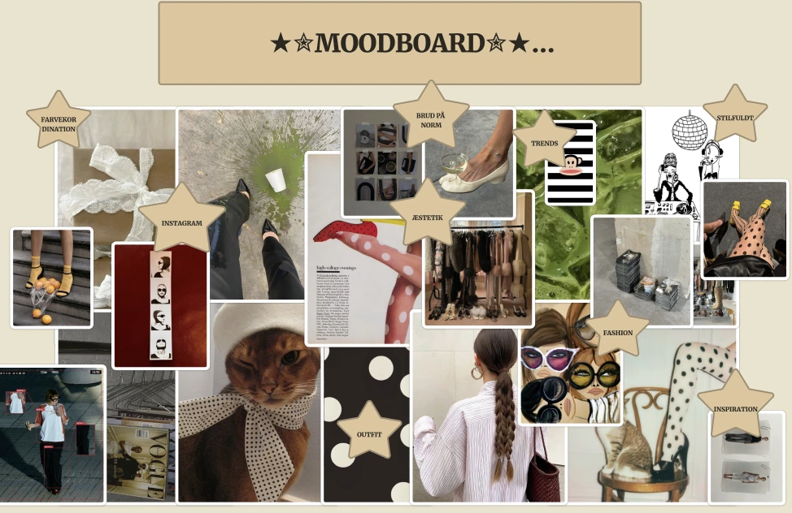
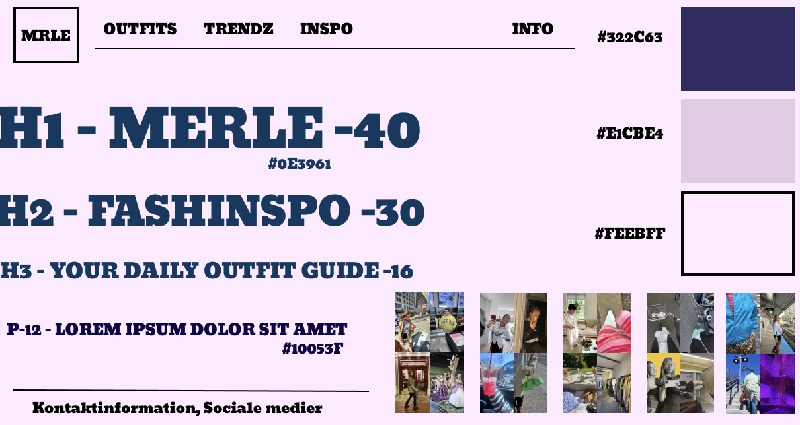
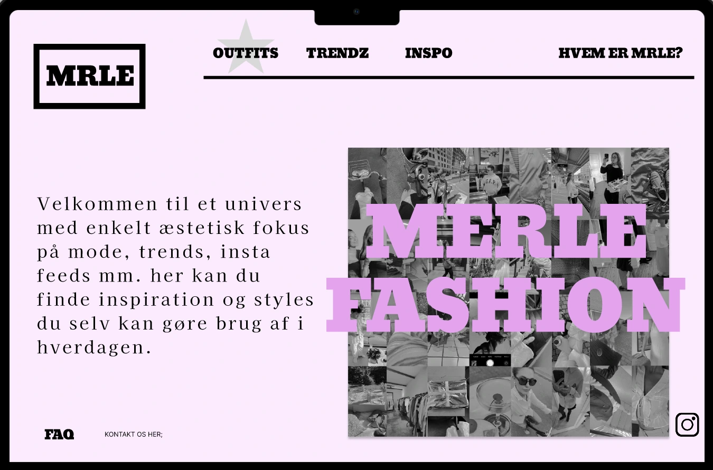
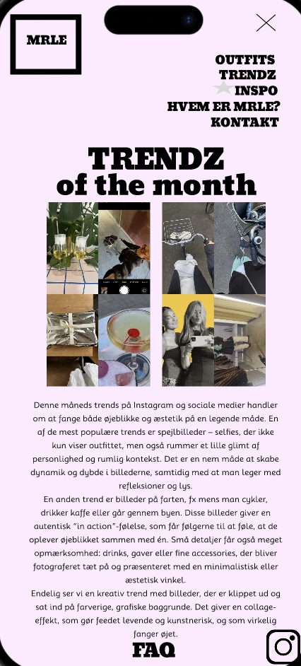

Moodboard
Visuel inspiration og idéudvikling til MRLE Fashion.

Dette projekt er mit eget website i TEMA 3, hvor jeg har arbejdet med layout, styling og wireframes til desktop og mobil. Billeder og tekst viser arbejdsprocessen og konceptet.
Gå til MRLE Fashion-site
Visuel inspiration og idéudvikling til MRLE Fashion.

Farver, typografi og UI-elementer, som guider designet.

Layout og struktur til desktopversionen af sitet.

Layout og struktur til mobilversionen af sitet.